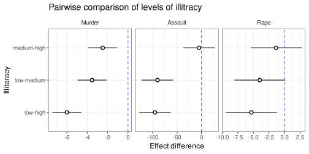

Simulating data for ANOVA similar to existing dataset for analysis
Simulation
Statistics
Author
TheRimalaya
Published
February 4, 2023
Modified
October 21, 2024
Simulating data is an important tool in both education and research, and it has been extremely helpful for testing, comparing, and understanding concepts in practical and applied settings.
Often, we use Analysis of Variance (ANOVA) to analyze variances to find out if different cases result in similar outcomes and if the differences are significant. Some simple examples include:
The effect of different diets on the growth of fish
Comparing the heights of three different plant species
The type of flour used for baking bread
These are common examples where, in some cases, data are collected by setting up an experiment, and in other cases, they are collected through sampling. This article explains how ANOVA analyzes the variance and in what situations are they significant through both simulated and real data.
Consider the following model with \(i=3\) groups and \(j=n\) observations,
\[
y_{ij} = \mu + \tau_i + \varepsilon_{ij}, \; i = 1, 2, 3
\texttt{ and } j = 1, 2, \ldots n
\]
Here, \(\tau_i\) is the effect corresponding to group \(i\) and \(\varepsilon_{ij} \sim \mathrm{N}(0, \sigma^2)\), the usual assumption of linear model. The simulation example below describes it in detail.
Simulation Example
In this simulation example, I aim to replicate specific elements of the USArrests dataset by simulating 50 cases for three types of crimes: Murder, Assault, and Rape. For each crime, I categorize individuals into three groups based on illiteracy levels and simulate their respective arrest rates. Here’s concise overview of the process and analysis steps:
# A tidytable: 9 × 4
Illiteracy Crime mean sd
<fct> <fct> <dbl> <dbl>
1 high Murder 11 3
2 medium Murder 8 4
3 low Murder 5 3
4 high Assault 214 79
5 medium Assault 190 82
6 low Assault 114 55
7 high Rape 23 8
8 medium Rape 21 10
9 low Rape 19 10
Since these data cannot contain negative values so instead of using rnorm available in stats package, I will use truncnorm available in GitHub. There are other options as well which can be used such as: …
If not installed, install the package as remotes::install_github("olafmersmann/truncnorm") or devtools::install_github("olafmersmann/truncnorm").
Code for Simulation, Analysis, and Plot
Let’s simulate 50 observation Arrest Rate in each levels of Illiteracy, and Crime in simulation design.
sim_data <- sim_design %>%group_by(Illiteracy, Crime) %>%mutate(rate =map2(mean, sd, ~tidytable(Rate = truncnorm::rtruncnorm(n = nsim, a =0, b =Inf, mean = .x, sd = .y ) %>%round() ))) %>%unnest() %>%ungroup() %>%nest(.by =c(Crime))
Here, Arrest rates were generated from a normal distribution using truncnorm from truncnorm package to get only positive value and also mirroring the mean and standard deviation in USArrests. Using normal distributions ensures the synthetic data mimics the actual data’s variation and mean, making the simulations realistic.
# A tidytable: 6 × 4
Illiteracy mean sd Rate
<fct> <dbl> <dbl> <dbl>
1 high 11 3 7
2 high 11 3 11
3 high 11 3 9
4 high 11 3 12
5 high 11 3 15
6 high 11 3 13
Simulated data for Assault
head(sim_data[Crime =="Assault", data][[1]])
# A tidytable: 6 × 4
Illiteracy mean sd Rate
<fct> <dbl> <dbl> <dbl>
1 high 214 79 178
2 high 214 79 163
3 high 214 79 174
4 high 214 79 234
5 high 214 79 181
6 high 214 79 139
Simulated data for Rape
head(sim_data[Crime =="Rape", data][[1]])
# A tidytable: 6 × 4
Illiteracy mean sd Rate
<fct> <dbl> <dbl> <dbl>
1 high 23 8 25
2 high 23 8 22
3 high 23 8 16
4 high 23 8 15
5 high 23 8 35
6 high 23 8 23
Using the simulated data above, we now fit an Anova model with Illiteracy as a factor (group) variable that affects the Arrest Rate (response variable) separately for each Crime. I have also made a density plot for the Rate variable for both simulated data and plot it with normal curve with corresponding mean and standard deviation. Following are the codes for fitting the Anova model, and creating density plot and box plot. Also we will perform a Posthoc test using Tukey’s method to make a pairwise comparison of different Illiteracy levels.
Warning in check_dep_version(): ABI version mismatch:
lme4 was built with Matrix ABI version 1
Current Matrix ABI version is 2
Please re-install lme4 from source or restore original 'Matrix' package
Here, the kernel density plots for arrest rates were shown alongside the normal density curve. This visual assessment checked the goodness of fit between simulated data and the expected normal distribution. The close match between kernel density and normal density validates that the data follows a normal distribution, confirming the simulation’s accuracy.
A one-way ANOVA output below helps to find if there is any difference between arrest rate based on illiteracy level for each crime. Here we see that in all crimes high illiteracy level was considered as reference and compared to this both medium and low illiteracy levels have lower arrest rate. This suggest that the higher illiteracy rate corresponds to higher arrest rate. However, for crimes: assault and rape, the effect of medium illiteracy rate has high p-value and can not be considered to have significant effect on arrest rate.
Call:
lm(formula = Rate ~ Illiteracy, data = .x)
Residuals:
Min 1Q Median 3Q Max
-8.44 -2.31 0.08 1.95 7.56
Coefficients:
Estimate Std. Error t value Pr(>|t|)
(Intercept) 10.9200 0.4247 25.713 < 2e-16 ***
Illiteracymedium -2.4800 0.6006 -4.129 6.08e-05 ***
Illiteracylow -6.0000 0.6006 -9.990 < 2e-16 ***
---
Signif. codes: 0 '***' 0.001 '**' 0.01 '*' 0.05 '.' 0.1 ' ' 1
Residual standard error: 3.003 on 147 degrees of freedom
Multiple R-squared: 0.4068, Adjusted R-squared: 0.3987
F-statistic: 50.4 on 2 and 147 DF, p-value: < 2.2e-16
ANOVA output for crime: Assault
mdl_fit[Crime =="Assault", Summary][[1]]
Call:
lm(formula = Rate ~ Illiteracy, data = .x)
Residuals:
Min 1Q Median 3Q Max
-158.32 -42.22 -3.11 38.74 221.68
Coefficients:
Estimate Std. Error t value Pr(>|t|)
(Intercept) 208.32 9.64 21.609 < 2e-16 ***
Illiteracymedium -5.00 13.63 -0.367 0.714
Illiteracylow -95.42 13.63 -6.999 8.51e-11 ***
---
Signif. codes: 0 '***' 0.001 '**' 0.01 '*' 0.05 '.' 0.1 ' ' 1
Residual standard error: 68.17 on 147 degrees of freedom
Multiple R-squared: 0.2969, Adjusted R-squared: 0.2873
F-statistic: 31.03 on 2 and 147 DF, p-value: 5.709e-12
ANOVA output for crime: Rape
mdl_fit[Crime =="Rape", Summary][[1]]
Call:
lm(formula = Rate ~ Illiteracy, data = .x)
Residuals:
Min 1Q Median 3Q Max
-20.10 -6.10 -0.11 5.56 20.90
Coefficients:
Estimate Std. Error t value Pr(>|t|)
(Intercept) 22.440 1.219 18.403 < 2e-16 ***
Illiteracymedium -1.340 1.724 -0.777 0.43837
Illiteracylow -5.320 1.724 -3.085 0.00243 **
---
Signif. codes: 0 '***' 0.001 '**' 0.01 '*' 0.05 '.' 0.1 ' ' 1
Residual standard error: 8.622 on 147 degrees of freedom
Multiple R-squared: 0.06547, Adjusted R-squared: 0.05276
F-statistic: 5.15 on 2 and 147 DF, p-value: 0.006894
Boxplot with fitted and true mean
effect_plot
Boxplots displayed arrest rate distributions within each illiteracy group stratified by crime. Points were scattered for detailed visualization, along with fitted means and confidence intervals. Here for all crimes, higher illiteracy corresponds to higher arrest rate and is more visible in murder.
Post-hoc plot comparing pairwise difference
tukey_plot

The post-hoc plot has highlighted statistically significant differences between different levels of illiteracy. Here, all pairs of illiteracy levels differ significantly at 95% confidence level for Murder however there is not such significant difference between medium and high illiteracy level for assault and rape.
Real Data Example
Data preparation and Dataset
Here, I have used USArrests dataset excluding the crime UrbanPop and merged it with another dataset state.x77 using its Illiteracy variable for 50 states. The Illiteracy was than categorized using its quantiles into three categories low, medium, and high mimiking the simulation example above.
# A tidytable: 3 × 3
States Illiteracy Rate
<chr> <fct> <dbl>
1 Alabama high 13.2
2 Alaska high 10
3 Arizona high 8.1
Data for crime: Assault
head(arrest[Crime =="Assault", data][[1]], 3)
# A tidytable: 3 × 3
States Illiteracy Rate
<chr> <fct> <dbl>
1 Alabama high 236
2 Alaska high 263
3 Arizona high 294
Data for crime: Rape
head(arrest[Crime =="Rape", data][[1]], 3)
# A tidytable: 3 × 3
States Illiteracy Rate
<chr> <fct> <dbl>
1 Alabama high 21.2
2 Alaska high 44.5
3 Arizona high 31
Analysis
I am following a similar pattern as in the analysis of simulated data: distribution plot, fitting an ANOVA model, effect plot showing the fitted value with a boxplot, and a Post-hoc showing pairwise comparison of the effect of illiteracy levels on arrest rate.
Kernel density alongside normal density curves for each crime shows and validates the normal distribution of the real data and help confirm the normality assumption for ANOVA, ensuring that the real data analysis aligns with the assumptions necessary for valid inference.
The analysis using both simulated and real datasets demonstrates the effectiveness of ANOVA in uncovering patterns. Simulating data that closely mirrors the USArrests dataset provided a controlled environment for testing and understanding variable interactions.
When applied to real data, the analysis confirmed significant differences in arrest rates across illiteracy groups, validating the method. By comparing these results, I highlighted how well-designed simulations can replicate real-world scenarios, offering valuable insights and preparing for real-world analyses.
This approach underscores the utility of combining simulated and real data, showcasing the robustness and reliability of the analytical methods used.